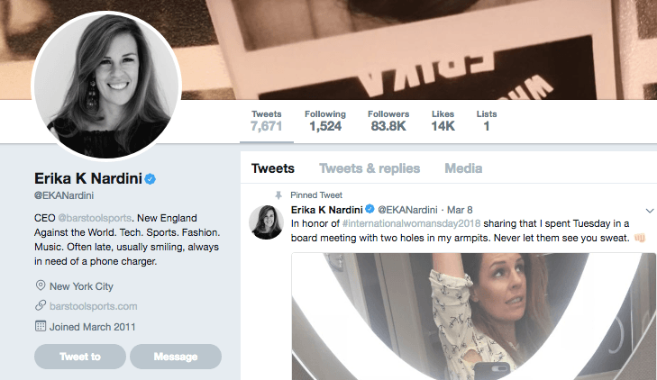

Alfonso Taft is a surfer stoner All-American Aryan alpha male quarterback. Raised in the Northeast, he speaks with a Southern twang for no apparent reason. Host of America's #1 Chadcast.


Barstool Sports is a blog centered around watching television, drinking alcohol, and eating pizza. This faux brand of masculinity glorifies mediocrity, weakness, and decadence.
“If you like sports, if you like pizza, if you like life, today are the two days you want to be a guy” said Barstool Sports CEO David Portnoy; neck beard on full display.
Barstool Pizza Review – Ovest Pizzoteca pic.twitter.com/UDfrP0fsQC
— Dave Portnoy (@stoolpresidente) March 15, 2018
According to Barstool, living your life vicariously through professional athletes on the couch is what being a man is all about.
After alt lite icon Jordan Peterson appeared on Tucker Carlson Tonight, Barstool blogger Feitelberg took to Twitter to tell the world in a snarkish tone, “Beta is the new masculinity, Tucker”.
Self-described Beta, Feitelberg is here to remind us all how masculine he is.
Wow, I can’t wait to get his “hot take” on sports. He seems like he’s truly an expert on athletic competition. After all, who knows more about sportsball than a self-described beta?
The staff of Barstool Sports consists entirely of beta males and they’re proud of it.

This is their entire brand — a strain of faux masculinity consisting of pizza abuse, television, and various other mediocre beta activities. Their staff even admits they are partaking in the same exact recreation as women— every single day. According to Barstool staff a woman sweating profusely and mutilating her clothing is a “#BossMove”.

Wow, I can’t wait to get her “hot take” on sports and athletic competition. She’s the CEO of Barstool Sports New England. I bet she’s totally an expert. Barstool is not an edgy alternative to ESPN. Getting your “hot takes” from Erika Nardini is no different than Jemele Hill.
For bugmen across the globe, Bartstool where they get their bantz. Bugmen can also be categorized as NARPS.
The term NARP was popularized on American college campuses in the early 2010’s. NARP, short for Non-Athletic Regular Person, originated as a pejorative coined by college athletes to describe their not so athletic peers. Later in the 2015 era, American College Chads starting using the term as a way to describe beta males, bugmen, nerds, and GDIs.
NARPS attempt to frame mediocrity as ideal while defying healthy norms. The NARP is obsessed with sports but is in poor physical condition. The NARP believes being obsessed with sports—memorizing statistics and pointless trivia is masculine. The NARP believes if he knows about professional athletes’ careers and lives this makes him an expert on athletic competition. The NARP will critique an athlete and insult their character, all while being unable to bench press 100 lbs.
In order to prevent this beta bugman faux masculinity from spreading, I’ve redubbed Barstool Sports, NARPstool Sports—a more fitting title for their pizza-beer-television brand of faux masculinity.
Our world is becoming so pozzed and clownish, the basic bro is degenerating into a beta male, fast. Aided by NARPstool sports culture, the basic bro finds himself in world of visual cuckoldry, alcohol, spectatorship, shitty food, and orbiting.
The basic bro completely obsessed with sportsball idolizes men on screens and gossips about their activities constantly. Without small dosages of the Red Pill, the Blue Pill basic bro becomes stupid, obese, and unhappy. As frustration continues in his life, Betas are likely to lash out emotionally against Chads. This is why sportsball fanatics burn Jerseys when a player switches teams or curses their name when they succeed or fail. At the end of the day, it’s Beta Males projecting their insecurities onto Chads in the form of deference or exaggerated disdain.
For too long, the NARP narrative has worked to besmirch masculinity in the West as vicarious spectatorship where athletes are seen as heroes and role models for no other reason other than they’re professional athletes. I love sports and admire some players but the NARP narrative turns comradery into idolatry.
I never really cared much about Barstool Sports. I thought it was lame but I was indifferent. I was under the impression they provided a somewhat grassroots alternative to cultural Marxist monster, ESPN. I was wrong. Barstool Sports is no different than ESPN. In fact, their brand of faux masculinity is even more insidious.
There is nothing masculine about NARPStool or the subculture that surrounds it. Is there anything less masculine than sitting on the couch, watching television, and eating junk food? Narpstool Sports: alpha males need not apply.
Read More: The Decline in Testosterone is Destroying The Basis of Masculinity